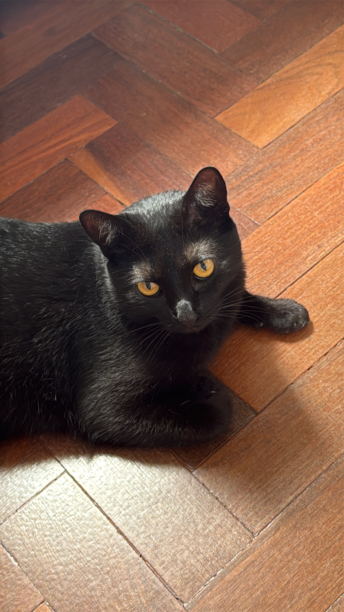

.
Sobre Mim
Quem eu sou...
Meu nome é Naomi, tenho 23 anos e sou estudante de Análise e Desenvolvimento de Sistemas no Centro Universitário São Lourenço. Minha paixão pela tecnologia começou na infância, tornando natural a escolha de seguir carreira na área de TI. Sou uma profissional esforçada e metódica, característica que se reflete na minha persistência até ver cada projeto concluído.
Do que eu gosto...
✦ Cuidar dos meus quatro gatos.
✦ Astronomia e ciência.
✦ Videogames de sobrevivência e filmes/séries de terror e sci-fi.
✦ Ouvir música.
✦ Criar coisas novas.

Minha gatinha, Artemis